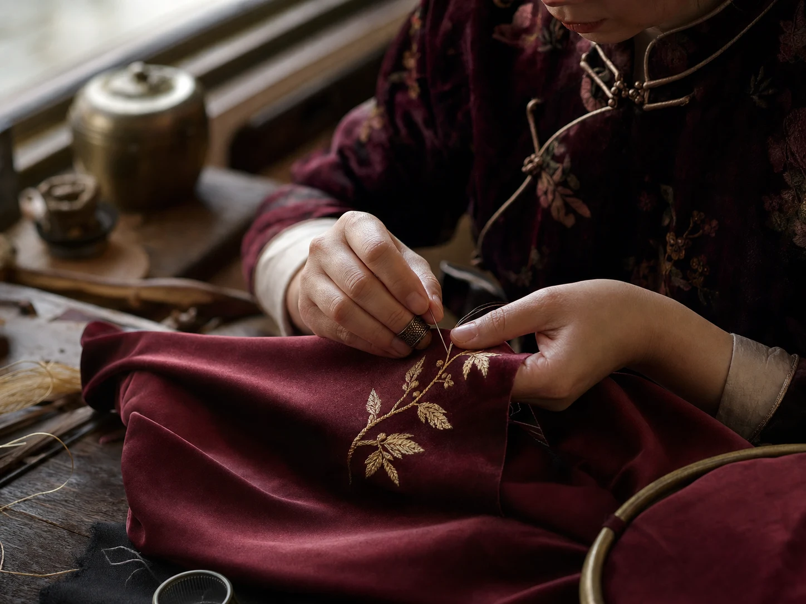
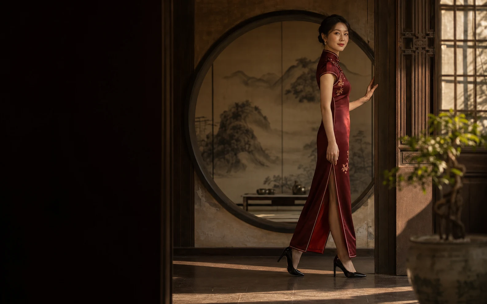
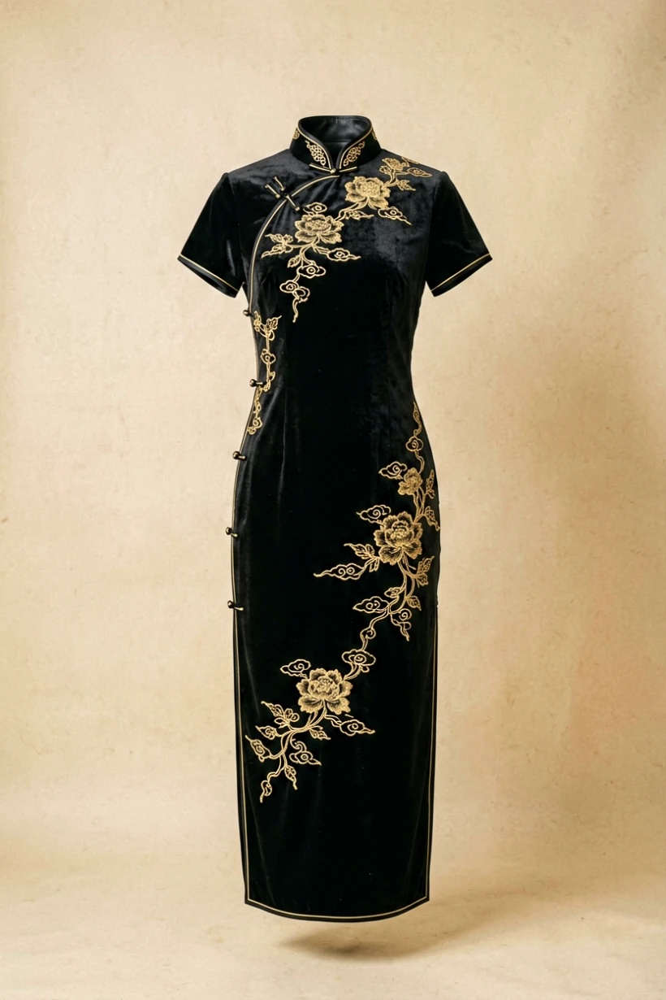
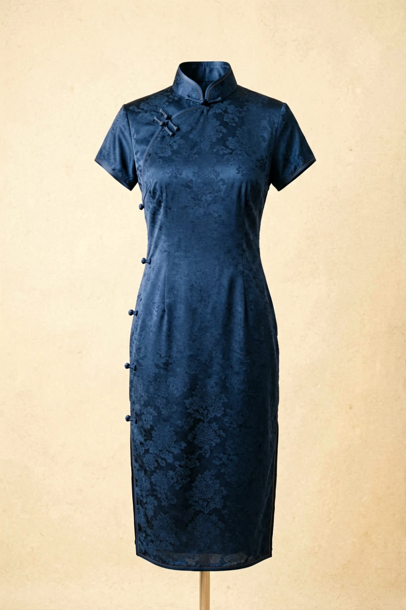
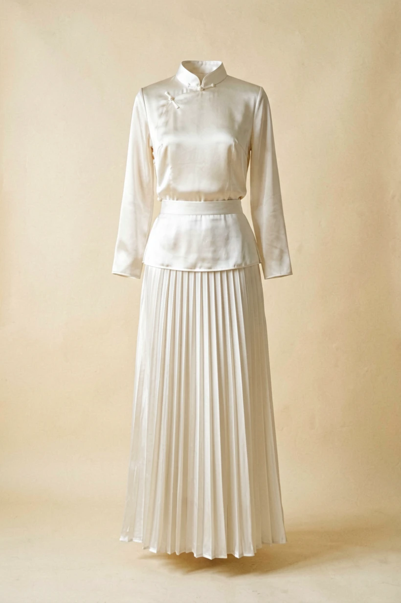

Quiet, useful notes on dressing well — on craft, care, and building a wardrobe that lasts.
How a coat, a knit and three essentials carry a whole season.

On slowness, traceability, and the feel of a proper cashmere.

Brushing, resting, storing — the small rituals that matter.

The quiet versatility of a single, well-cut slip.

Cost-per-wear, and why fewer things feel like more.

How to wear a blazer that never feels like a uniform.